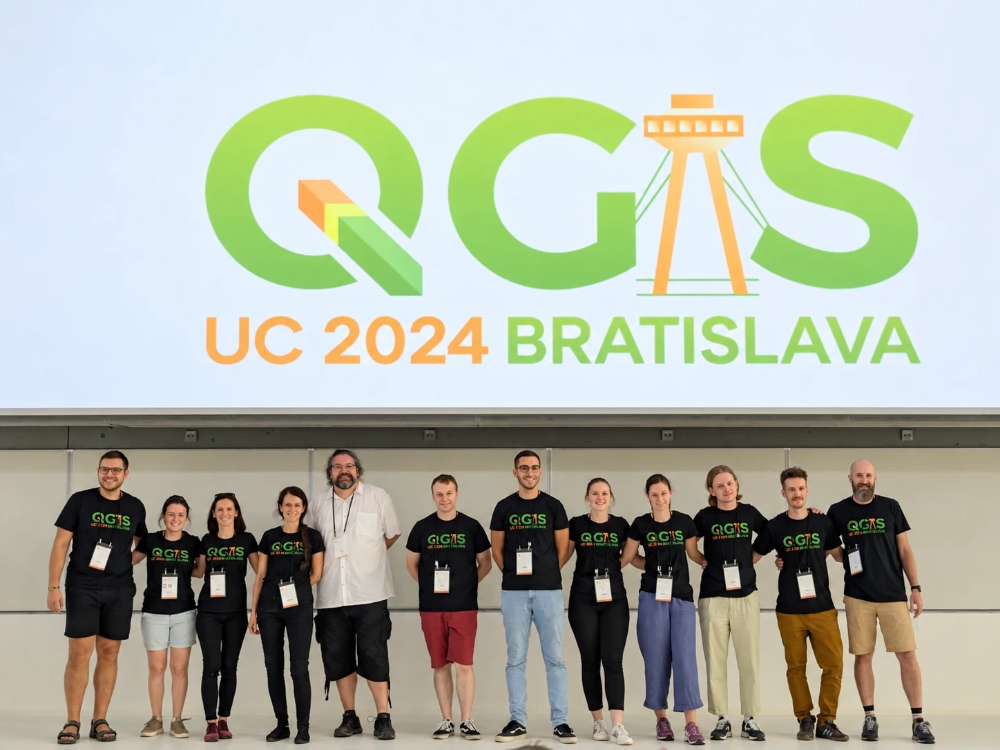

Spájame ľudí, firmy, školy a inštitúcie, ktoré na Slovensku pracujú s QGIS. Zdieľame know-how, informujeme o novinkách a hľadáme príležitosti na spoluprácu.
Chceme vytvoriť slovenskú komunitu okolo projektu QGIS, otvorenú, zameranú na vzdelávanie a postavenú na transparentnosti a inklúzii v duchu otvoreného softvéru. Úplný zoznam cieľov je v stanovách združenia.
Prepájať používateľov, firmy, úrady, školy a výskumné pracoviská. Budovať mosty k príbuzným komunitám – OSGeo, OpenStreetMap, open data.
Nové verzie QGIS, pluginy, dátové zdroje, podujatia doma aj vo svete. Jedno miesto, kde sa dozviete, čo je v slovenskom QGIS svete nové.
Projekty, zákazky, výskum, stáže aj dobrovoľnícka práca na QGIS. Komunita, kde sa dopyt stretáva s ponukou.
Prednášky, workshopy, návody, preklady. Zdieľanie skúseností je to, na čom QGIS vo svete stojí – a chceme, aby stálo aj na Slovensku.
Ukazovať, že otvorený GIS je plnohodnotná, profesionálna voľba pre firmy, samosprávy aj školy. Vzdelávať, nie presviedčať.

QGIS nie je produkt jednej firmy. Je to projekt tisícov ľudí, ktorí ho vyvíjajú, prekladajú, dokumentujú, učia a používajú – a väčšina z nich to robí preto, že chce niečo vrátiť komunite.
Práve v tom sa QGIS líši od komerčných riešení. Nie v počte funkcií, ale v nezištnej chuti budovať niečo spoločné a spolupracovať. Vzájomná pomoc nie je slabosť, ale evolučná výhoda – ako to už koncom 19. storočia opísal Peter Kropotkin vo svojej knihe Vzájomná pomoc. Komunity, ktoré si pomáhajú, prežijú a rastú.
Na Slovensku chceme byť takou komunitou. Nie klubom fanúšikov jedného softvéru, ale sieťou ľudí a organizácií, ktorí si navzájom pomáhajú robiť lepšie GIS.
Úspešné skupiny používateľov QGIS vo svete sú komunity „s vysokou úrovňou spolupráce medzi jej členmi“, ktoré vyznávajú „hodnoty ako priateľstvo, dobrá vôľa, čestnosť, nezaujatosť, rešpekt a dôvera“ a kde si členovia „najviac cenia zdieľanie know-how a výmenu skúseností“.
Jana Michalková: Open Source filozofia ako báza pre naplnenie konceptu triple helix (dizertačná práca, Prešovská univerzita 2017) – prieskum 43 expertov z 13 skupín na 4 kontinentoch„Nie uzavretosť, ale otvorenosť a zdieľanie predstavujú jediný spôsob, akým sa naša civilizácia môže vyvíjať.“
tamžeZhrnutie výskumu o skupinách používateľov QGIS vo svete →
Švajčiarsko objavuje open source „nie ako výklenok, ale ako štátnu politiku“. Nový zákon robí z open source predvolenú voľbu pre štátny softvér, národná elektronická identita je postavená na verejnom kóde a diskusie o štátnom cloude či digitálnom podpisovaní občianskych iniciatív menia agendu. Gerhard Andrey, poslanec švajčiarskeho parlamentu a spoluzakladateľ digitálnej agentúry Liip, v keynote na QGIS User Conference 2026 v Laaxe ukázal, ako tieto rozhodnutia vznikli a prečo sú otvorené komunity ako QGIS „kľúčom k suverénnej digitálnej budúcnosti“.
Čo si z toho berieme my:
From Niche to Norm: Switzerland's Open Source Turn (QGIS UC 2026, Laax) →
Prejav na Parldigi 2022: open source ako digitálne verejné dobro (DE) →
Mapa firiem, inštitúcií, škôl a samospráv, ktoré QGIS používajú alebo ho podporujú. Hľadajte partnerov vo svojom okolí, dodávateľov, lektorov alebo kolegov na spoluprácu.
Zoznam organizácií priebežne overujeme a aktualizujeme (naposledy –). Položky označené „na potvrdenie“ sú odvodené z registrácie člena, nie organizácie. Zobrazených: 0.
Zástupcovia slovenskej skupiny sa zúčastnili na medzinárodnej konferencii používateľov QGIS. Keynote Gerharda Andreyho o švajčiarskom obrate k open source, novinky z vývoja QGIS 4 a stretnutia s ostatnými user groups. Pripravujeme blogpost.
Termín a miesto oznámime na sociálnych sieťach a v mailing liste. Máte tip na tému alebo priestor? Ozvite sa.
Slovenská skupina zorganizovala oficiálnu medzinárodnú konferenciu projektu QGIS spolu so stretnutím komunity prispievateľov.
Prvé neformálne stretnutie používateľov k 21. narodeninám projektu QGIS.
Dve prezentácie o QGIS: Čo je nové v QGIS 3.18 a Vznik Slovenskej skupiny používateľov QGIS.
QGIS plugin na jednoduchý prístup k českým a slovenským otvoreným dátam. Hľadajte „GeoData CZ/SK“ v správcovi pluginov.
GitHub repozitár →Pripravený zoznam XYZ podkladových máp na import do QGIS (M. S. Kyriakou, 2019).
xyz_basemaps_qgis.xml →24 užitočných tipov a trikov na prácu s QGIS, deň po dni.
Otvoriť kalendár →Trojdielna séria videí: od mračien bodov po rastre.
1. diel · 2. diel · 3. dielMartin Dobiaš: Čo je nové v QGIS 3.18 · Jana Michalková: Vznik Slovenskej skupiny používateľov QGIS.
Video 1 · Video 2Zbierame slovenské návody, postupy a príklady použitia QGIS z praxe: samosprávy, firmy, výskum. Máte projekt, o ktorom by sa malo vedieť?
Pošlite nám ho →Zhrnutie prvého roka Slovenskej skupiny používateľov QGIS (november 2021).
Stiahnuť PDF →Nezáleží na tom, či ste začiatočník alebo vývojár QGIS. Vyberte si kanál, ktorý vám vyhovuje.
Nezáväzný formulár – dajte nám o sebe vedieť a budeme vás informovať o podujatiach.
Vyplniť formulárKontaktná osoba: Jana Michalková · kód a stránka: github.com/qgis-sk
QGIS Slovensko, občianske združenie · IČO 55961746 · Klenov 120, 082 44 Klenov · registrované MV SR 8. 12. 2023 · stanovy (PDF)
Sme oficiálna skupina používateľov QGIS registrovaná v roku 2020 v sieti QGIS User Groups. Viac o nás, o tíme a o pravidlách komunity: Kto sme · Pravidlá.